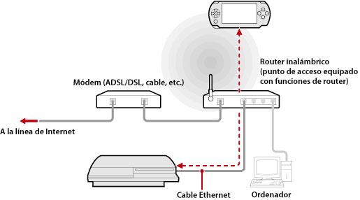
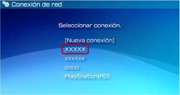

Red > Utilización de la función de uso a distancia (a través de un punto de acceso)
Utilización de la función de uso a distancia (a través de un punto de acceso)
Conecte el sistema PS3™ a un punto de acceso mediante un cable Ethernet y utilice la función de LAN inalámbrica del sistema PSP™ para conectar este dispositivo al sistema PS3™ a través del punto de acceso.
Ejemplo de configuración común

Notas
- Un router inalámbrico es un dispositivo que añade funcionalidad de punto de acceso a un router. Un punto de acceso es un dispositivo que permite establecer una conexión con una red de forma inalámbrica. Un router es un dispositivo que se utiliza para compartir una conexión de Internet entre varios dispositivos.
- Un módem puede estar equipado con funcionalidad de router. Conecte el sistema PS3™ a un dispositivo equipado con funcionalidad de router.
- Si tanto el punto de acceso como el módem están equipados con funcionalidad de router, desactive dicha funcionalidad en ambos dispositivos. El sistema PS3™ y el sistema PSP™ deben estar conectados a la misma red. Si dos o más routers se están utilizando al mismo tiempo, el sistema PS3™ y el sistema PSP™ pueden estar conectados en redes diferentes y no podrá utilizar la función uso a distancia.
Preparación para el uso (sistema PS3™ y sistema PSP™)
Para utilizar la función de uso a distancia por primera vez, debe registrar (emparejar) el sistema PSP™ con el sistema PS3™. Registre el sistema en  (Ajustes) >
(Ajustes) >  (Ajustes de uso a distancia) > [Registrar dispositivo].
(Ajustes de uso a distancia) > [Registrar dispositivo].
Preparación para el uso (sistema PSP™)
Cree una conexión de red para conectar el sistema PSP™ a un punto de acceso. Si el sistema PSP™ ya dispone de una conexión de red guardada que puede utilizarse para conectarse a una red a través de un punto de acceso, no será necesario que cree otra conexión. Para obtener más información acerca de la creación de una conexión de red, consulte la guía del usuario del sistema PSP™.
Utilización de la función de uso a distancia
1. |
En el sistema PS3™, seleccione |
|---|---|
2. |
En el sistema PSP™, seleccione |
3. |
Seleccione [Conectarse a través de una red privada]. |
4. |
En la lista de conexiones, seleccione la conexión del punto de acceso que desea utilizar para el uso a distancia.  Si la conexión se establece correctamente, la pantalla del sistema PS3™ se mostrará en el sistema PSP™. |
 (Red) >
(Red) >  (Uso a distancia).
(Uso a distancia). (Uso a distancia).
(Uso a distancia).Notas
- La función de uso a distancia puede utilizarse dentro del alcance de la señal del punto de acceso.
- Si activa el ajuste de inicio a distancia en el sistema PS3™, puede configurarlo para que se encienda automáticamente (Wake on LAN). En este caso, no debe realizar el paso 1 anterior. Para obtener más información, consulte (Ajustes) > (Ajustes de uso a distancia) > [Inicio a distancia] en esta guía.
Cancelación de la función de uso a distancia
Pulse el botón PS (botón HOME (menú principal)) en el sistema PSP™ y, a continuación, seleccione [Salir del uso a distancia] > [Salir y apagar el sistema PS3™].
Nota
Seleccione [Salir sin apagar el sistema PS3™] si está utilizando el sistema PS3™ para copiar archivos, o para realizar descargas en segundo plano y otras tareas que requieren que el sistema esté encendido.